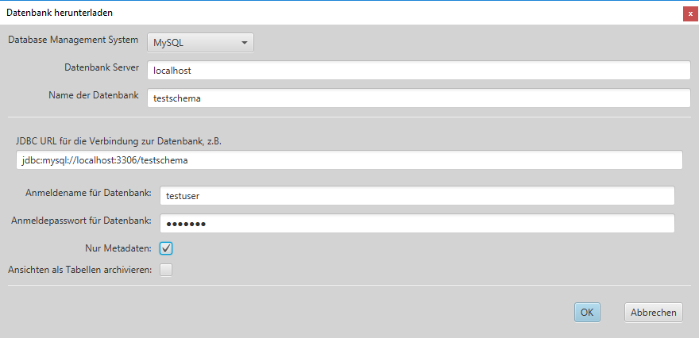
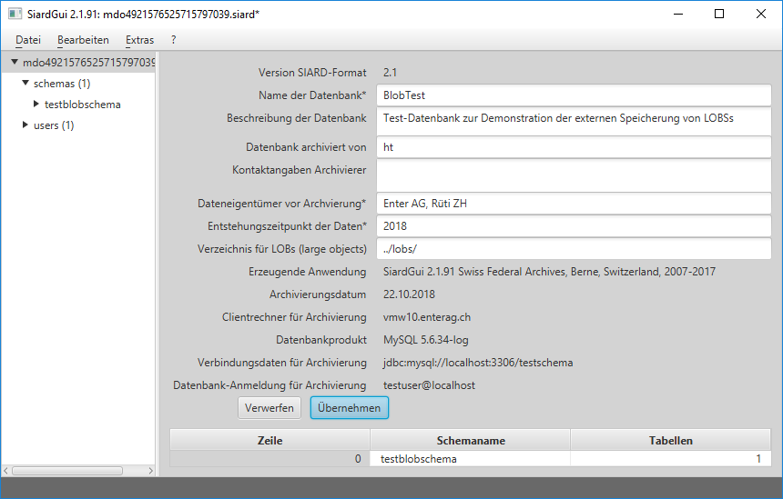
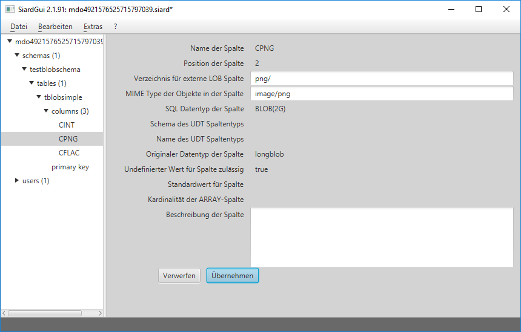
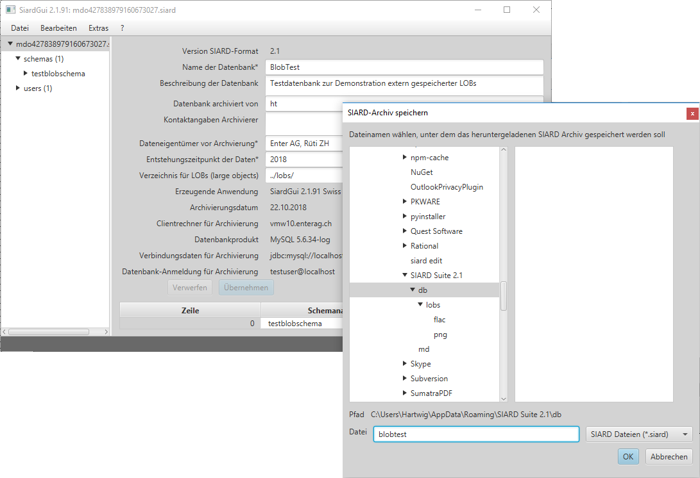
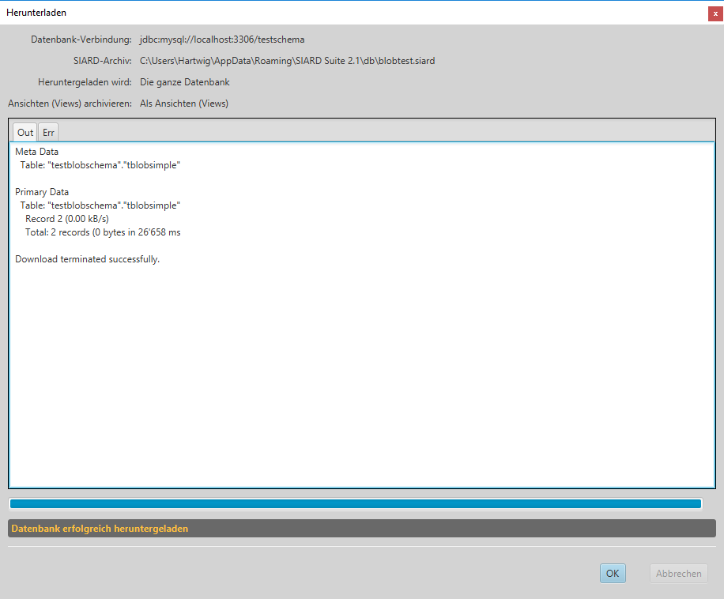

SIARD Suite 2.2 - Externe LOBs
Der Standard SIARD Format 2.2 hält fest, dass grosse Objekte (LOBs) einer Datenbank im externen Filesystem gespeichert werden können. Der Speicherort muss in den Metadaten des SIARD-Archivs festgehalten sein.
Damit die Objekte in einigen LOB-Spalten der Datenbank extern gespeichert werden können, müssen die entsprechenden Spalten zuerst mit geeigneten externen Verzeichnissen in Verbindung gebracht werden. Danach kann die Datenbank heruntergeladen werden.
Herunterladen der Metadaten
Um Verzeichnisse mit Datenbank-Spalten in Verbindung zu bringen, müssen zuerst die Metadaten der betreffenden Datenbank heruntergeladen werden.

Externe Speicherorte eintragen
Die Metadatenfelder "Verzeichnis für LOBs" und "MIME Type" können nun ausgefüllt werden.
Der Speicherort einer LOB-Spalte kann als absoluter file:-URI eingetragen werden. Es ist jedoch empfehlenswert, alle LOB-Speicherorte relativ zu einer globalen URI im globalen Abschnitt der SIARD Metadaten zu spezifizieren. Ausserdem ist es sinnvoll, gleichzeitig die globalen Metadaten für Datenbanknamen etc. einzugeben:

N.B.: Alle LOB-Verzeichniss müssen mit einem Schrägstrich aufhören,
der angibt, dass es sich um existierende externe Ordner im Filesystem handelt.
Der globale externe Speicherort könnte als absoluter file:-URI angegeben werden. Dies würde aber verhindern, dass das SIARD-Archiv zusammen mit seinen LOB-Dateien an einen anderen Ort verschoben werden kann. Deshalb wird empfohlen, den externen globalen Speicherort relativ zum Verzeichnis zu spezifizieren, wo das SIARD-Archiv gespeichert ist. Dieses wird mit "../" gekennzeichnet. Im obigen Beispiel ist das globale Verzeichnis für LOBs als "../lobs/" spezifiziert. Alle externen LOBs werden also in Verzeichnissen relativ zum Ordner lobs im Verzeichnis, wo sich das SIARD Archiv befindet, gespeichert werden.
Das Verzeichnis für eine externe LOB-Spalte wird dann relativ zum globalen Speicherort eingetragen:

Der Wert "png/" in diesem Beispiel weist SIARD Suite an, die extern gespeicherten
LOBs der Spalte CPNG der Tabelle tblobsimple
im existierenden externen Ordner lobs/png/ in dem Ordner zu speichern,
wo das SIARD-Archiv gespeichert ist.
N.B.: Wenn die maximale Anzahl LOBs pro Ordner im Optionen-Dialog angegeben wurd, werden die individuellen LOB-Datein in numerierten Unterordern von lobs/png gespeichert, welche jeweils höchstens die angegebene Anzahl LOB-Dateien enthalten.
Für extern gespeicherte LOB-spalten kann ein MIME-Type ("image/png" im Beispiel) eingegeben werden. Dieser wird von SIARD Suite genutzt, um eine geeignete Dateierweiterung für die externen LOB-Werte festzulegen (also etwa .png für MIME Type image/png).
In einer Datenbank kann mehr als eine LOB-Spalte extern gespeichert werden:
Nach diesen Änderungen ist es empfehlenswert, die veränderten Metadaten
anzuzeigen und als XML zu sichern.
Herunterladen von extern zu speichernden LOBs
Wenn solcherart vorbereitete Metadaten vorhanden sind (von einer externen XML-Datei importiert oder als "Nur Metadaten" heruntergeladen), werden sie als Mustervorlage für das Herunterladen der Primärdaten verwendet. D.h. die Einträge in den globalen Metadaten, für allen Beschreibungen und für externe LOB-Verzeichnisse werden übernommen:

In diesem Beispiel wird eine kleine SIARD-Datei gespeichert, welche auf BLOBs
in Verzeichnissen lobs/png/ und lobs/flac/ in ihrem Speicherverzeichns db
verweist:
N.B.: Windows Explorer zeigt eingebettete Metadaten der FLAC-Dateien an,
weil die Dateinamenerweiterung .flac bekannt ist und deshalb Metadaten
dieser Dateitypen eruiert werden können.